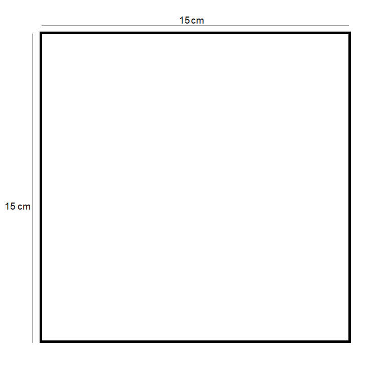
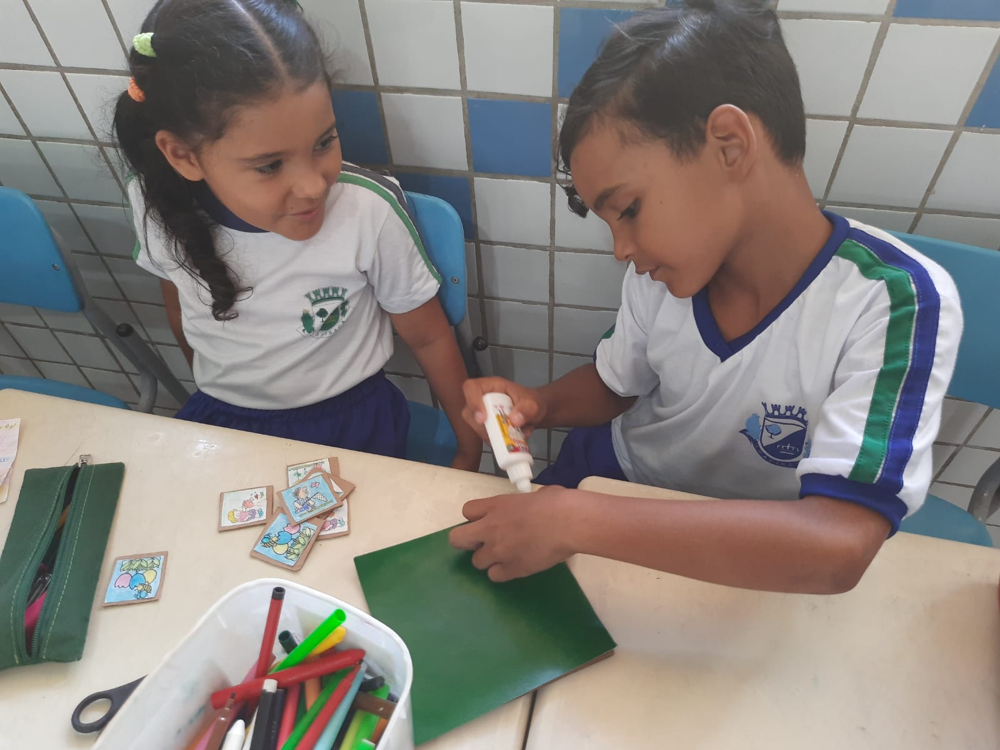
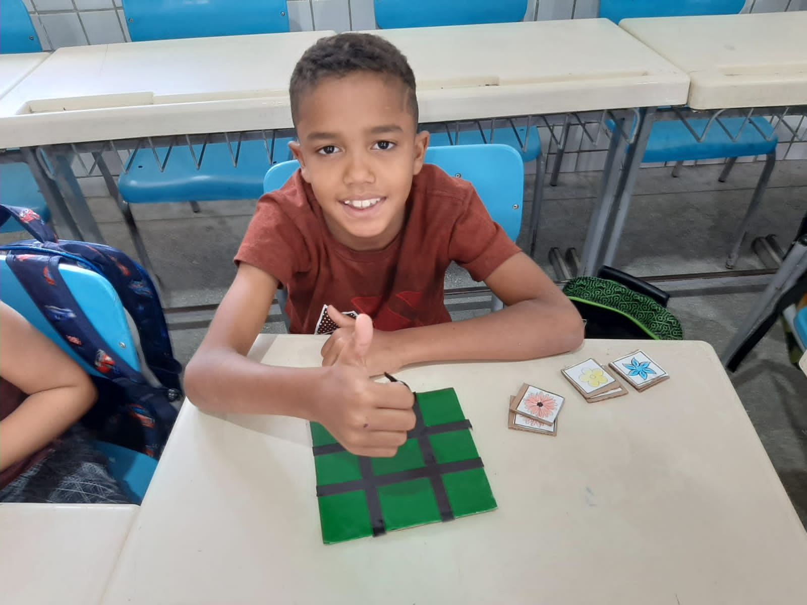

Com a régua e o lápis faça um quadrado de 15x15cm para servir como base do jogo e recorte-o com a
tesoura. Transfira-o para a cartolina guache e recorte;

Pegue a cola e cole o quadrado de cartolina guache na parte de baixo do papelão;

Pegue a fita colorida e trace o jogo da velha com ela na parte de cima do papelão;

Pegue as tampas de garrafas e faça em cima delas com o marcador de quadro os símbolos de círculo e X na
mesma quantidade;